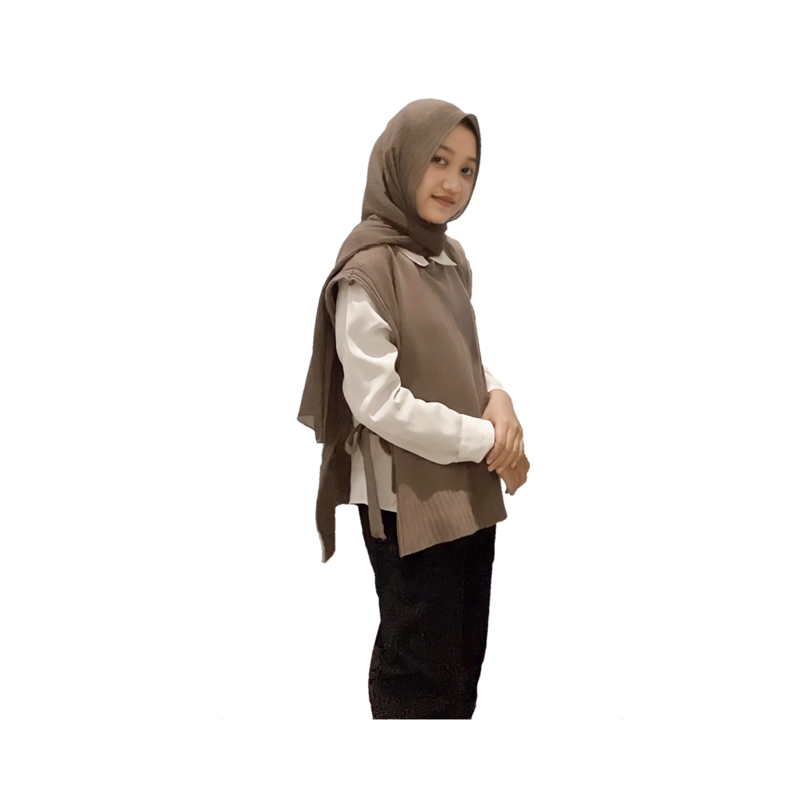
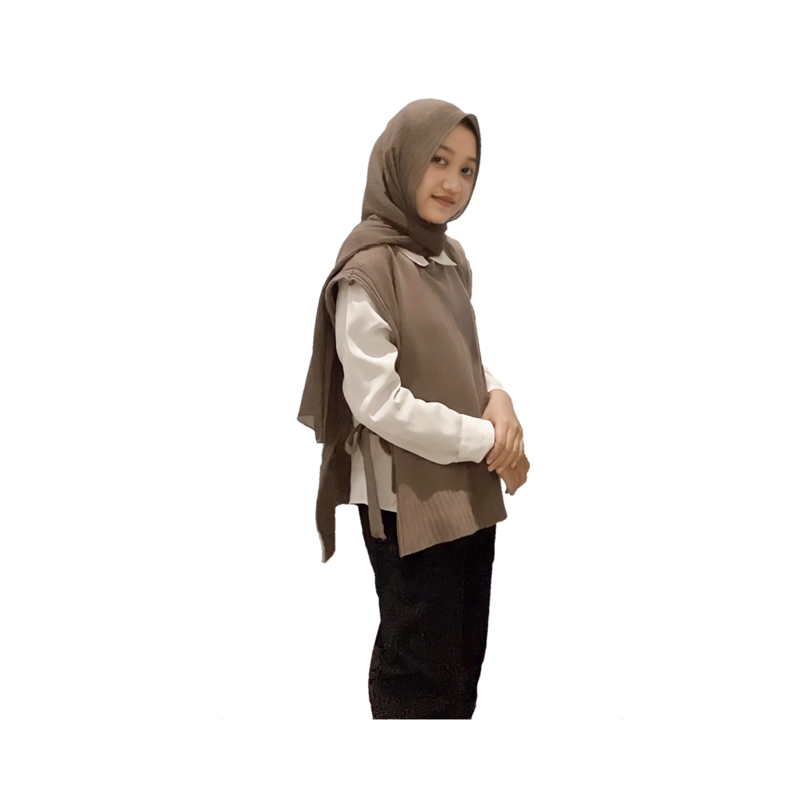

INSTITUT TEKNOLOGI SUMATERA
Biodata Diri

Nama : Salsabilla Putri Dyani
Tanggal Lahir : 04 Mei 2002
Tempat Lahir : Medan
Alamat : Jl. Raden Saleh Gg.Madri Way Huwi Lampung Selatan
Pekerjaan : Mahasiswa
Program Studi : Teknik Informatika

Nama : Salsabilla Putri Dyani
Tanggal Lahir : 04 Mei 2002
Tempat Lahir : Medan
Alamat : Jl. Raden Saleh Gg.Madri Way Huwi Lampung Selatan
Pekerjaan : Mahasiswa
Program Studi : Teknik Informatika